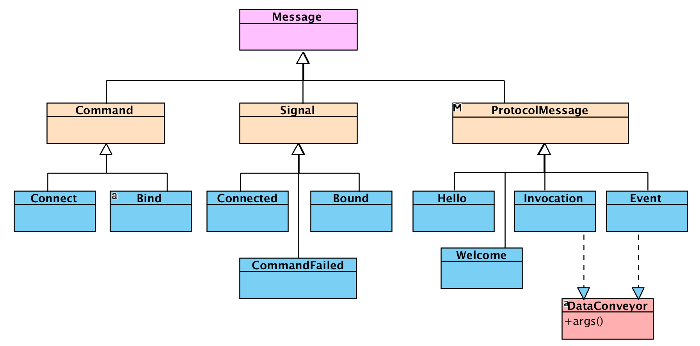

Messages
AkkaWamp provides you with an object-oriented representation of all of its managed messages.
import akka.wamp.messages._
You’ll get classes representing both internal commands/signals and WAMP messages carried over the network transport, such as Hello, Welcome, Publish, etc. that can be sent to (or received from) Akka actors.

+-----+----------------+------+------+------+------+-------+--------+
| Cod | Message | Pub | Brk | Subs | Calr | Dealr | Callee |
+-----+----------------+------+------+------+------+-------+--------+
| 1 | "HELLO" | Tx | Rx | Tx | Tx | Rx | Tx |
| 2 | "WELCOME" | Rx | Tx | Rx | Rx | Tx | Rx |
| 3 | "ABORT" | Rx | TxRx | Rx | Rx | TxRx | Rx |
| 6 | "GOODBYE" | TxRx | TxRx | TxRx | TxRx | TxRx | TxRx |
| | | | | | | | |
| 8 | "ERROR" | Rx | Tx | Rx | Rx | TxRx | TxRx |
| | | | | | | | |
| 16 | "PUBLISH" | Tx | Rx | | | | |
| 17 | "PUBLISHED" | Rx | Tx | | | | |
| | | | | | | | |
| 32 | "SUBSCRIBE" | | Rx | Tx | | | |
| 33 | "SUBSCRIBED" | | Tx | Rx | | | |
| 34 | "UNSUBSCRIBE" | | Rx | Tx | | | |
| 35 | "UNSUBSCRIBED" | | Tx | Rx | | | |
| 36 | "EVENT" | | Tx | Rx | | | |
| | | | | | | | |
| 48 | "CALL" | | | | Tx | Rx | |
| 50 | "RESULT" | | | | Rx | Tx | |
| | | | | | | | |
| 64 | "REGISTER" | | | | | Rx | Tx |
| 65 | "REGISTERED" | | | | | Tx | Rx |
| 66 | "UNREGISTER" | | | | | Rx | Tx |
| 67 | "UNREGISTERED" | | | | | Tx | Rx |
| 68 | "INVOCATION" | | | | | Tx | Rx |
| 70 | "YIELD" | | | | | Rx | Tx |
+-----+----------------+------+------+------+------+-------+--------+
Abort
It is the message the client receives from the router upon session opening failure. It can be deconstructed with:
-
details: Dict
It is a dictionary with additional details. It might be empty. -
reason: Uri
It is the abort reason given as identifier (e.g.wamp.error.no_such_realm)
CommandFailed
It is the signal the client receives from the manager actor whatever command (e.g. Connect or Bind) fails. It can be deconstructed with:
-
cmd: Command
It is the original command that was failed -
ex: Throwable
It is the exception thrown.
Connect
It’s the command message your client application sends to the manager actor to connect to a router. It can be constructed passing the following arguments:
-
uri: URI
It is the URL of the router your client wants to connect to. Akka Wamp supports the following transport protocols:tcp
Transmission Control Protocoltsl
Transport Secure Layerws
WebSocketwss
WebSocket over TLS
-
format: String
It is the format (textual or binary) to be used by connected peers to represent WAMP messages when they are carried over the selected transport. Akka Wamp supports the following formats:json
(textual) JavaScript Object Notationmsgpack
(binary) Message Pack
tcp, tls, wss transports nor msgpack format.Connected
It’s the signal the client receives from the manager actor upon successful connection to a router. It can be deconstructed with:
conn: ActorRef
It is the connection handler actor reference the client shall hold. That’s where further messages addressed to the router shall be sent to.
Disconnected
It’s the signal the client receives from the manager actor upon disconnection from the router side.
Error
It is the message the client receives from the router when a request cannot be fulfilled. It can be deconstructed to the following arguments:
-
requestType: Int
It is the message type of the original request. -
requestId: Id
It is the identifier of the original request -
details: Dict
It is the dictionary of additional details. It might be empty. -
error: Uri
It is the errror given as WAMP URI (e.g.wamp.error.no_such_subscription) -
payload: Payload
It is the payload bearing application data. Refer to the Payloads section for further details.
Goodbye
It is the message the client either sends to or receives from the router when it’s time to close a session. It can be constructed (deconstructed) with (to) the following arguments:
-
reason: Uri
It is the reason identifier given as WAMP URI (e.g."wamp.error.close_realm"). -
details: Dict
It is the dictionary of additional details.
Hello
It is the message the client sends to the router to request a new session being opened with the given realm attached. It can be constructed passing the following arguments:
-
realm: Uri
It is the realm identifier given as WAMP URI. -
details: Dict
It is the dictionary of additional details (such as supported roles and feature announcements).
Publish
It is the message the client sends to the router to publish some data. It can be constructed passing the following arguments:
-
requestId: Id
It is the unique request identifier. Akka Wamp provides you with base classes you can inherit thenextRequestIdmethod from. -
topic: Uri
It is the topic URI to publish to. -
payload: Payload
It is the payload bearing application data. Refer to the Payloads section for further details. -
options: Dict
It is the dictionary of additional options. For example, the"acknowledge" -> trueentry asks for the Published message being replied by the router.
,---------. ,------. ,----------.
|Publisher| |Broker| |Subscriber|
`----+----' `--+---' `----+-----'
| PUBLISH | |
|------------------> |
| | |
|PUBLISHED or ERROR| |
|<------------------ |
| | |
| | EVENT |
| | ------------------>
,----+----. ,--+---. ,----+-----.
|Publisher| |Broker| |Subscriber|
`---------' `------' `----------'
Published
It is the message the client receives from the router upon sucessful publication if client asked for an acknowledgment.
-
requestId: Id
It is the identifier from the original publication request -
subscriptionId: Id
It is an identifier chosen by the router for the subscription
Subscribe
It is the message the client sends to the router to subscribe to a topic. It can be constructed passing the following arguments:
-
requestId: Id
It is the unique request identifier. Akka Wamp provides you with base classes you can inherit thenextRequestIdmethod from. -
topic: Uri
It is the topic URI to subscribe to. -
options: Dict
It is the dictionary of additional details.
,---------. ,------. ,----------.
|Publisher| |Broker| |Subscriber|
`----+----' `--+---' `----+-----'
| | |
| | |
| | SUBSCRIBE |
| | <---------------------
| | |
| | SUBSCRIBED or ERROR |
| | --------------------->
| | |
| | |
| | |
| | |
| | UNSUBSCRIBE |
| | <---------------------
| | |
| | UNSUBSCRIBED or ERROR|
| | --------------------->
,----+----. ,--+---. ,----+-----.
|Publisher| |Broker| |Subscriber|
`---------' `------' `----------'
Subscribed
It is the message the client receives from the router upon sucessful subscription.
-
requestId: Id
It is the identifier from the original publication request -
publicationId: Id
It is an identifier chosen by the router for the publication
Welcome
It is the message the client receives from the router upon successful session opening. It can be deconstructed with:
-
sessionId: Long
It is the unique session identifier generated by the router as random long integer number between1and9007199254740992 -
details: Dict
It is the dictionary with additional details. It might be empty.